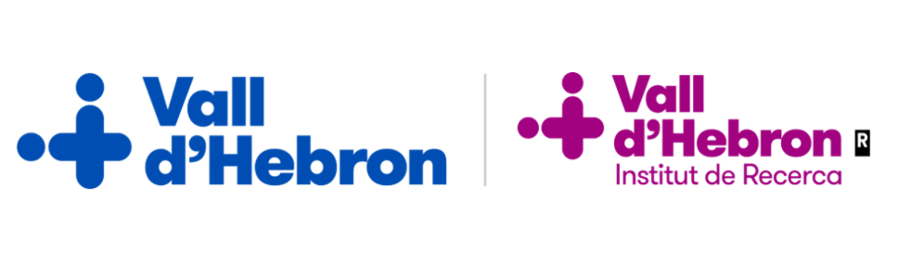
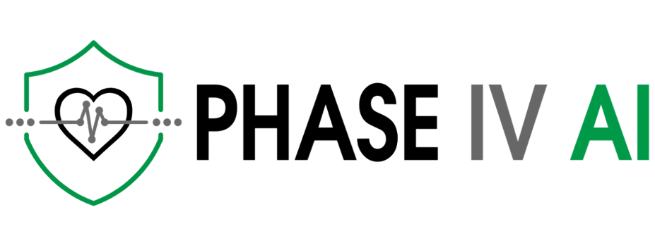
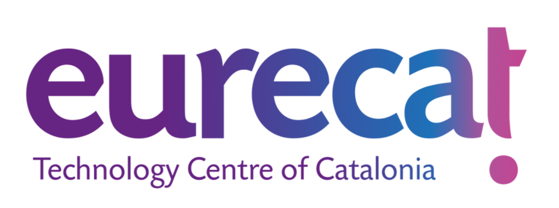
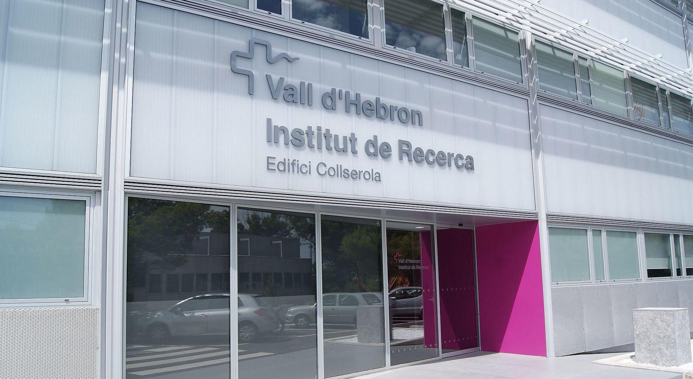
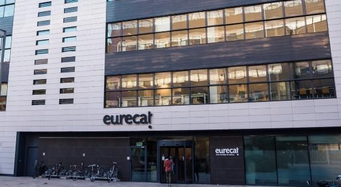

|  |  |  |
| Inicio | Programa | Proyecto | Cómo llegar |
Bienvenidos al 1er Workshop de Colaboración Clínico-Técnica para la Investigación y Desarrollo de Servicios de Inteligencia Artificial (IA) en el Ámbito de la Salud, que tendrá lugar el 11 de abril de 2024 de 9:00-14:00 en el Vall d'Hebron Institut de Recerca (VHIR) - Edificio Collserola.
IMPORTANTE: Los participantes deben confirmar su participación via email a almudena.maceda@vhir.org antes del 8 de abril.
En este workshop discutiremos los servicios de IA para el caso de uso de cáncer de pulmón. El objetivo es evaluar el impacto de la IA en la precisión y velocidad del diagnóstico, la carga de trabajo de radiólogos, el coste y los resultados clínicos. El evento reunirá a profesionales de la salud e investigadores en IA de aplicación clínica para explorar formas innovadoras basadas en la imagen que mejoren la eficiencia y asistencia en los procesos de atención médica.
Esta es una oportunidad para compartir conocimientos entre dos campos que tradicionalmente han operado de manera independiente. Creemos que, al unir fuerzas, podemos impulsar avances significativos en el ámbito de la salud digital y mejorar la calidad de vida de los pacientes. Además será una buena ocasión para fortalecer colaboraciones existentes, así como para fomentar futuras colaboraciones y proyectos innovadores.
Este workshop es parte del proyecto europeo PHASE IV AI y está organizado por
Fundado en 1994, el VHIR promueve y desarrolla la investigación, la innovación y la docencia biosanitarias del Hospital Universitario Vall d'Hebron de Barcelona. Su misión es identificar y aplicar nuevas soluciones a los problemas de salud de la sociedad, logrando liderazgo y excelencia a nivel nacional e internacional.
Fundado en 2015, Eurecat es el principal socio tecnológico de las empresas que trabajan en Catalunya. Proporciona al sector industrial y empresarial tecnología diferencial y conocimientos avanzados, ofrece soluciones a sus necesidades de innovación e impulsa su competitividad en un entorno cambiante.
|  |  |